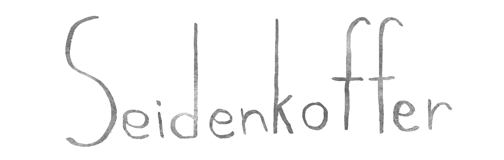

„Mit meinem Seidenkoffer reise ich in die Welt." Was bedeutet ein Leben im Exil in einer Realität, die immer mehr ihre Grenzen schließt? Ausgehend von der Lyrik Rose Ausländers sucht Opera Opaque nach Antworten in eigener und fremder Erfahrung und verwandelt sie in einen Liederabend für Sopran und Gitarre.
28.10.2025 | 20:00
schwere reiter | münchen